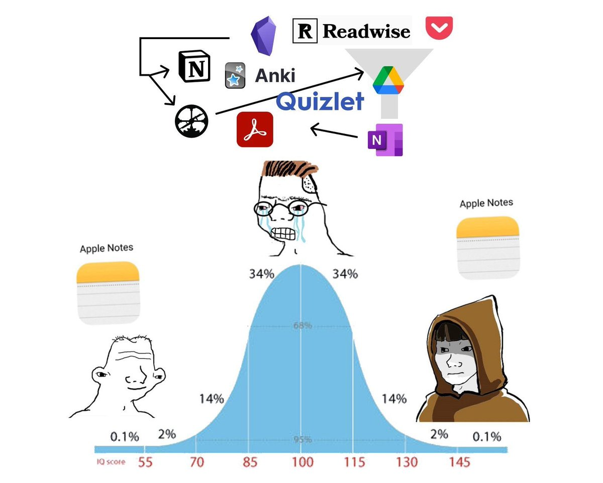

Writing
August 30, 2026
I have been trying to find my place in the writing world. After getting on and off with different tech stacks in the past, I have finally settled on adopting Tufte CSS with my own static generator written in JavaScript. Nothing fancy, but I hope the limitations and simplicity of this blog can help me focus on the most important of writing a blog, the writing itself. I hope this can be my treehousePaul Graham describes a treehouse as a project one starts by one's own idea for one's self-fulfillment..
Me and Writing Postcards
I have always loved writing postcards, a hobby people nowadays seem to have abandoned.Me at a post box in London Through postcards, I can let the receiver know more about me and how I feel about them. In a way, it's like a social lubricant, only it's mostly one-way communication. The things I write in postcards are typically things that are left unsaid in a day-to-day conversation. Things like, appreciation, gratitude, and hopes for long-lasting relationships.
Living in Japan, it's so effortless to send postcards. One can find post boxes all over the country. Japan maintains these post boxes and collect mails every day because their bureaucracy depends on mails. Of all three countries in which I've gone during my undergrad, it's the only one requiring me to physically mail the application form. And this is not rare, it's more of a norm than an exception.
One thing I like about postcards is the flat fee they have for domestic and international destinations. As of 2026, it costs JPY 85 to send a postcard to anywhere in Japan, and JPY 100 to send across the globe. Postal rates were not always uniformReferring specifically to standard letters and postcards. Historically, the labor cost of calculating individualized rates based on distance and size was traded for efficiency of a single, lower flat rate Thanks to Babbage and Colby.
The experience of sending postcards is unique not only due to its flat rate: you don't get to track postcards. We may be used to checking where our Amazon package is so we can anticipate it arriving, but this is something people don't usually do to postcards. You can track postcards, but it will introduce additional fees that will vary according to distance. Not being able to track postcards gives it a kind of charm. Like sending mail during the early years of international postages in the 1800s. The mystery gives the anticipation we don't get from our digitalized, information-rich routine.
However, post companies don't prioritize postcards as they do with other types of mails. Postcards usually don't hold that much formal importance. It is not enveloped so it also holds no secrecy. This results in some post companies from certain countries to disregard postcards as important, resulting in many cards never arrive at their destined addressesFrom experience, sending to Indonesia yields an arrival rate of 10%.. Luckily, most of my experience in Postcrossing has been greatA site to send postcards to random strangers. I haven't missed one address.
Me and Writing
I used to write when I was in middle school. I had this blog hosting my ideas of motivation and self improvement. A lot of this had something to do with my mother being a mindfulness coachI am not sure if this is an actual job title.. I shared a blog with my middle school friend, managing one blogspot admin panel with two authors. I remember putting GintamaA Japanese anime. pictures in the articles as illustrations of self-improvement. Writing for fun without worrying whether anyone would read them, my world was pretty small and innocent back then. Actually, I did dream of getting some earnings from my blog at some point around that period.
My life then went on without much writing, and it became even less of a thing ever since AI. I use weaponized incompetence to let AI do a lot of the writings I need to do in Japanese and English, just because they are not my mother tongueEven though I don't use my mother tongue for learning or working anymore.. That means that I have strayed quite far from the habit of writing, especially the manual kind. Despite that, I have always had ideas to explore in the fields of language, self-improvement, economics, and business. Every time and idea pops up in my mind, I would add them to my note. 
As you might think, I am not good at this writing thing yet. I have probably put too much margin and side notes the site looks cluttered by now. No matter. It's my treehouse and the goal is not some readermaxxing. As adults, we tend to value only the things that are considered productive. Learning a new language sounds economically productive. Learning how to skate as an adult? Waste of time. However, things may not be as linear as how it's perceived. Serendipity can be attractive to pursue. So I want to keep this blog as an attempt to respect myself. To assert that my ideas and my curiosity are among my priorities.
Some of My ideas
Evolution's priority is not longevity. As humans live longer, we as a society are obsessed with longevity. Some are even obsessed with regaining youth. But evolution's priority has never been longevity. As long as reproduction is ensured, a species' task is fulfilled. Longevity might eliminate the need for reproduction, thus contradicting evolution.
English also uses kanjiThe East Asian writing system originating from China.. At a glance, it may seem clear that English does not utilize kanji. Kanji utilizes stroke order with a plethora of variations to yield approximately one meaning per character. Each character is also read in a different way, and some of them are read differently in different context. There are 26 characters in the English alphabet and each does not mean anything on their own. However, the English vocabularies rarely derive phonetics from its writing. The word 'content' can be read in two different ways. 'Tough', 'though', 'thorough', and 'thought' are infamous examples of English words not retaining phonetics information within them. This means that in order to learn an English word, one has to know its 1. meaning, 2. sound, and 3. the order of characters. Sounds too much like kanji, doesn't it?
What single item of the current world will be most valuable if we bring it to the world 500 years ago?
If the multiverse exists, what would most likely be consistent across every universe? One idea is the letter 'o'. It's so intuitive that it probably ends up being the same in another universe. The equal sign could be a good argument, too. The wheel is also undisputed. A counterexample would be the kanji writing system. It takes space but not necessarily for good reasons, as there are inconsistencies among the characters. There is a reason why the modern surviving logographic writing system is basically only kanji.
And so on.